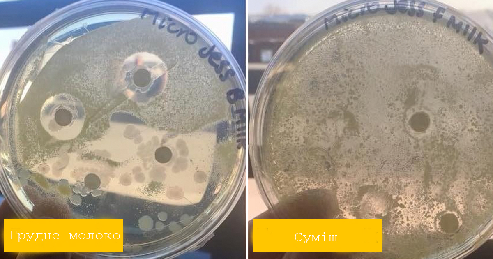
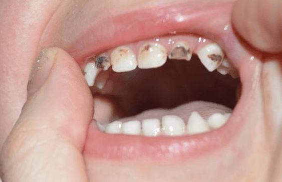
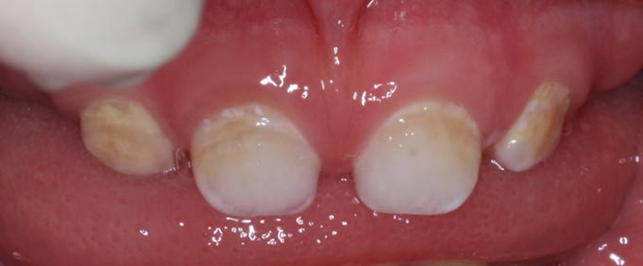
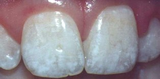

Вплив грудного вигодовування на зуби дитини
Updated: Jul 2, 2021
Прийшовши з дитиною до стоматологічного кабінету, мама часто чує від лікаря, що в її дитини псуються зуби від грудного вигодовування і що від тривалого грудного вигодовування формується неправильний прикус. Лікарі наполягають на тому щоби швидше відлучати дитину від грудей. З’ясуймо, чи правий такий лікар. Малоймовірно що стоматологи слідкують за останніми новинами і результатами досліджень в сфері грудного вигодовування.
Канадський дантист доктор Брайан Палмер каже: «Якби грудне молоко призводило до руйнування зубів, це було б еволюційним самогубством». Адже природа в нашому світі ніколи не створює чогось зайвого або непотрібного. Все, що задумано - несе свій сенс. Вкрай дивно було б створити фактор, без якого, з одного боку, неможливо було б вижити немовляті, а з іншого - якої б підривав його здоров'я.
У цій статті ми розвіємо міфи і зрозуміємо, які фактори насправді сприяють розвитку карієсу та інших уражень молочних зубів, а в наступній - що впливає на формування прикусу.
Спадковість. Якщо в когось в родині був обширний карієс в ранньому дитинстві, то на це потрібно звернути увагу. Лякатись не потрібно, не завжди це передається дитині. Якщо проводити гігієну ротової порожнини з появи першого зубчика, при введенні прикорму дотримуватись правильного харчування, відвідувати стоматолога для профілактики раз на пів року, то процес утворення карієсу можна уповільнити або навіть і уникнути його.
Внутрішньоутробний розвиток. Перші зачатки молочних зубів починають формуватись на 6 тижні після запліднення і формуються протягом всієї вагітності. Ускладнення під час вагітності та пологів можуть негативно вплинути на формування зачатків молочних та постійних зубів (гіпоплазія емалі, обширний карієс). На стан майбутніх зубів у дитини може впливати і ранній токсикоз вагітності, вживання деяких медикаментів під час вагітності, несприятливі умови довкілля, нераціональне харчування.
Захисні властивості грудного молока:
Ротова рідина, або змішана слина, забезпечує нормальне функціонування стану зубів і слизової оболонки порожнини рота. Бактерицидні властивості слини обумовлені присутністю лізоциму. Саме цей лізоцим, який є антибактеріальним агентом і руйнує стінки бактерій міститься в грудному молоці, потрапляє дитині і здійснює захисну функцію вже з перших днів життя. Грудне молоко містить дуже важливі захисні компоненти, такі як лактоферин, альфа лактальбумін, імуноглобуліни, лактопероксидазу.

Лактоферин – має антивірусну, антимікробну та протигрибкову активність. У здоровій порожнині рота постійно вегетують молочнокислі лактобактерії. Саме ці лактобактерії теж містяться в грудному молоці і захищають від росту патогенної мікрофлори, а саме стрептококів, стафілококів, кишкової палички та ін. Тому дуже важливо годувати дитину грудьми з перших днів для того щоб формувалися захисні механізми ротової порожнини та імунітет в немовляти.
Основною причиною появи карієсу в грудної дитини є бактерія Streptococcus mutans. Дитина може нею заразитись від дорослих через столове наряддя, пляшки з водою. Тому потрібно обовєязково подбати про те, щоб дитина мала свої столові прибори. Ні в якому разі не їсти з однієї ложки із дорослими. Під час прогулянок, подорожей дитина має мати свою окрему пляшку з водою. Важливо дотримуватись правильного харчування під час прикорму. Саме солодка їжа, різне печиво, цукри, соки налипають на поверхню зубів, таким чином знижують рівень кислотності і спричиняють активне розмноження Streptococcus mutans.
Сучасні дослідження виявили що грудне молоко не знижує рівень кислотності, а руйнування зубів відбувається саме в кислому середовищі. Також грудне молоко ремінералізує зубну емаль, поставляє в організм кальцій і фосфор, які засвоюються набагато краще з грудного молока чим суміші. Саме а-лактальбумін, який міститься в грудному молоці сприяє кращому засвоєнню кальцію.
Імуноглобуліни IgА и IgG, лактопероксидаза та лактоферин, які містяться в грудному молоці мають бактерицидну дію та стримують ріст Streptococcus mutans. Такий висновок зробив відомий лікар – стоматолог Брайан Палмер. Дослідження довели що саме грудне молоко не призводить до виникнення карієсу, якщо на зуби не потрапляють інші вуглеводи, які спричиняють розмноження бактерій і карієс.
Яка б адаптована не була суміш, в ній немає тих захисних властивостей як в грудному молоці. Суміш знижує рівень кислотності ротової порожнини, тому діти на штучному вигодовуванні більш піддатливі до поширення карієсу.
Основним вуглеводом грудного молока є лактоза. Дуже часто ми чуємо про те, що вуглеводи грудного молока спричиняють карієс. Але, це насправді не так. Лактоза – це вуглевод, який саме в тонкому кишечнику, а не в ротовій порожнинині, розпадається на глюкозу і галактозу. Тому, саме з цієї причини карієсогенні бактрії не можуть використовувати лактозу в якості субстрата. Звідси висновок, що лактоза не має ніякого впливу на зуби дитини. Натомість, карієсогенні бактерії отримують живильне середовище за рахунок простих вуглеводів, таких як сахароза і фруктоза.

так виглядає карієс молочних зубів
На жаль, дуже часто трапляється обширний карієс в дітей. Які ж ще є його причини? Давайте, читайте далі )

Гіпоплазія емалі молочних зубів виникає в результаті глибокого розладу обміну речовин в організмі плода під впливом порушення обміну у вагітної жінки, тому що формування молочних зубів відбувається саме в період вагітності. В групу ризику виникнення гіпоплазії емалі та обширного карієсу попадають діти чиї матері під час вагітності перенесли інфекційні захворювання (краснуху, токсоплазмоз, грип, ГРВІ), діабет або хронічні захворювання нирок, також можуть впливати токсикози вагітності, незбалансоване харчування, родові травми, резус-конфлікт. Тому причиною гіпоплазії у 96% є ускладнення під час вагітності. Найголовніше ускладненням гіпоплазії емалі полягає в тому, що на зміну гіпоплазії досить швидко приходить карієс зубів. Гіпоплазія є найголовнішою і поширеною причиною розвитку раннього обширного карієсу і виникнення інших несприятливих наслідків.
Симптоми гіпоплазії емалі помітити не фахівцеві досить складно, але батьки повинні звернути увагу на тривожні симптоми - поява на зубах малюка різних білястих або блакитного відтінку плям, борозенок, ділянок з тонким або ж недорозвиненим шаром емалі, на крихкість емалі зубів - і звернутись до стоматолога.
Фактором, що провокує гіпоплазію та карієс, є годування дитини сумішами. Будь-яке штучне вигодовування - неповноцінне для дитини у порівнянні з природним вигодовуванням, адже саме в материнському грудному молоці міститься необхідна кількість мінералів і вітамінів, які знаходяться в необхідній пропорції і легко засвоюються.
При гіпоплазії емалі молочних зубів необхідні: контроль за щоденним ищенням зубів дитини; збалансоване та здорове харчування, обмеження вживання цукру та легкозасвоюваних вуглеводів; регулярні профілактичні огляди; своєчасне лікування каріозних вогнищ.

Також існує таке ураження зубів, як флюороз, яке часто плутають з карієсом. Флюороз - це пошкодження зубної емалі, яке викликається надлишком фтору, який потрапляє в організм в надлишковій кількості. На молочних зубах зустрічається рідше ніж гіпоплазія емалі. При флюорозі на емалі проявляються світлі і темні плями. Найчастіше він зустрічається в ендемічних районах, де у питній воді є надлишок фтору.
Часто ми чуємо про такий термін як «пляшечковий карієс». Що ж таке пляшечковий карієс? І чому важливий вид годування? Коли дитина їсть з пляшки, припустимо, суміш. Яка б адаптована не була суміш, в ній НЕМАЄ тих речовин, імуноглобулінів, які б захищали від бактерій і створювали б захисну функцію в ротовій порожнині.
Коли дитина їсть з пляшки, суміш не потрапляє відразу в горло, як молоко з груді, а знаходиться в роті; вуглеводи із суміші налипають на зуби, утворюючи наліт, і спричиняють сприятливе середовище для розмноження бактерій та руйнування емалі зубів.
Профілактика карієсу:
- Прикорм/харчування. Після введення прикорму, дуже важливо стежити за тим, щоби харчування було здорове і збалансоване. ‘Їжа повинна містити достатньо кальцію, фосфору, вітамінів, макро- та мікроелементів. Для того щоб засвоювався кальцій потрібен вітамін Д, тому потрібно достатньо часу проводити на дворі. Слід обмежувати їжу, яка містить цукор, це солодощі та печивка різні. Після прикорму давати дитині грудь. Різні соки, нектари та підсолоджені чаї замінити на просту воду без цукру. Не домішувати цукор до каші.
- Окреме столове наряддя. Не облизувати дитячі ложки, їжу.
- Гігієна. Регулярне чищення зубів (2 рази на день) , від появи першого зубчика. Слідкувати щоб на зубчиках не з’являвся наліт. Для чищення використовувати дитячі зубні пасти, щітки, серветки.
Отже, годувати грудьми після року і вночі можна. Грудне вигодовування не є причиною карієсу. Причинами є бактерія Streptococcus mutans, спадковість, ускладнення під час вагітності та пологів, погана гігієна, штучне вигодовування, надлишок фтору. Якщо молочні зуби уражені карієсом, то ця інфекція переходить на постійні зуби. Тому потібно уважно слідкувати за станом молочних зубів і, якщо є ураження, то лікувати їх. Бажаємо вашим діткам гарних зубчиків без дирочок!
Статтю редагувала Юля Олех